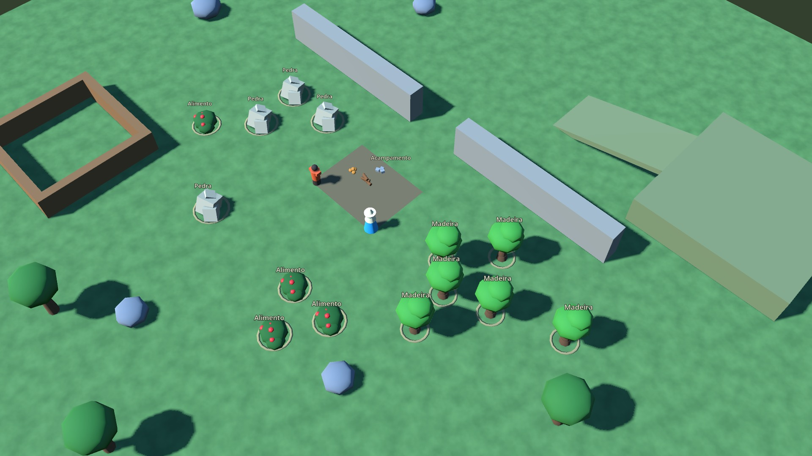

UI-0 R2.1 · Marcos de Pedra e Eclipse
Sobrevivência · Linhagem · Origem na Terra Selvagem
DAWN
OF KIN
OF KIN
Dois sobreviventes. Nenhuma ruína anterior. Cada marco erguido na clareira inaugura uma linhagem sob o silêncio da sombra.
INICIAR ASSENTAMENTO
Capítulo I · O Isolamento · Alden & Brena
ENTRAR →
Continuar Crônica
Proposta T3.8
Carregar Marco
Proposta T3.8
Configurações
720p / 1080p · Áudio · Câmera
Sair
Encerrar sessão
Região Inicial · Ao Vivo em 3D
Godot 4.7.2 · gl_compatibility · Intel UHD 620
DAWN OF KIN · PROPOSTA VISUAL UI-0 R2.1 (NÃO APROVADA)